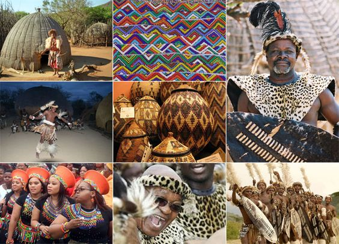

Africa

African people are incredibly diverse, and it is important to recognize that Africa is not a monolithic entity but rather a continent with significant variations within and among its regions. People in Africa belong to various ethnic groups, such as the Yoruba, Zulu, Hausa, Amhara, Oromo, and many more. These groups often have their own languages, cultural practices, and social structures.
African culture encompasses a vast array of diverse traditions, customs, languages, arts, music, and practices that have developed over centuries across the continent of Africa. Due to the immense cultural diversity within Africa, it is important to note that there is no single African culture but rather a mosaic of distinct cultures and subcultures. Cultural practices in Africa are deeply rooted in the histories, beliefs, and values of various ethnic groups and communities. Some key aspects of African culture include: Oral Tradition: Many African cultures have a strong emphasis on oral tradition, passing down knowledge, stories, proverbs, and histories through storytelling, music, and poetry.
Extended Family and Community:
The concept of family extends beyond the nuclear family to include extended relatives, neighbors, and the community as a whole. The community plays a significant role in social interactions, support systems, and decision-making.
Religion and Spirituality:
Africa has a rich diversity of religious beliefs, including indigenous religions, Christianity, Islam, and syncretic practices that blend traditional beliefs with other faiths. Traditional African religions often involve the veneration of ancestors and spirits.
Art and Craftsmanship:
African art is renowned for its creativity and aesthetic beauty. This includes a wide range of art forms such as sculpture, pottery, masks, textiles, beadwork, and jewelry. These artistic expressions often carry symbolic and cultural significance.
Music and Dance:
Music and dance are integral parts of African culture, used in various social, religious, and celebratory contexts. Different regions have their own unique styles and instruments, such as the djembe, kora, mbira, talking drum, and many others.
Cuisine:
African cuisine varies across regions and reflects local ingredients, flavors, and cooking techniques. Staple foods like grains (such as maize, millet, or rice), tubers (such as yam or cassava), vegetables, and meats are commonly used in diverse and flavorful dishes.
Traditional Attire:
African clothing and fashion showcase vibrant colors, intricate patterns, and unique styles. Traditional garments, such as the dashiki, kente cloth, boubou, or kaftan, are worn for special occasions, cultural ceremonies, and everyday wear.